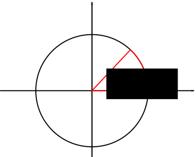

7. 三角関数の値ってどうやって求めるんだ？¶
三角関数表ってどうやって作るんだろう。級数展開で計算するのかな。自分でも試しに三角関数の値計算してみたいけどもうちょっと素朴に手軽に出来ないものか。
そういうわけで素朴な方法を考えてみた。次の図を見てほしい。
単位円の場合は角度\(\theta\)に対応する周長は\(\theta\)なわけだ。ということはだ、ある\(y\)のとこまでの周長がわかれば、\(\sin(\text{周長}) = y\)となるわけだ。
よっしゃ、周長を積分で求めてやればよいわけだな。簡単のため角度は\([0,\pi/2]\)に限定して\(dl=\sqrt{dx^2+dy^2}=\sqrt{1+(\frac{dx}{dy})^2}dy,\;x^2+y^2=1\)を使ってやれば
\[\int dl = \int_0^{y_0}\sqrt{1+\frac{y^2}{1-y^2}}dy \equiv \theta\]
となる。\(y_0=\sin\theta\)なのだから
\[\int dl = \int_0^{\sin\theta}\sqrt{1+\frac{y^2}{1-y^2}}dy \equiv \theta\]
となる。これは\(\sin\theta\)の値を与えるとそれに対応する角度が得られるのだから、\(\arcsin\)になっている。すなわち、
\[\arcsin x = \int_0^{x}\sqrt{1+\frac{y^2}{1-y^2}}dy\]
が得られた。
台形積分使った計算コードを示しておく。
台形積分使った\(\arcsin\)の実装例¶
#include <math.h>
#include <stdio.h>
#include <iostream>
#include <stdlib.h>
double f(double x)
{
return sqrt(1+x*x/(1-x*x));
}
int main(int argc, char **argv)
{
double s = atof(argv[1]);
double sum = 0;
int n = 10000;
double a = 0, b = s;
sum += (f(a)+f(b))/2.;
for(int k=1; k<n; k++)
{
sum += f(a+k*(b-a)/(double)n);
}
sum *= (b-a)/(double)n;
printf("theta = %.15e\n", sum);
return 0;
}
ちなみにコレ使うと\(\pi\)の近似値も計算できるよ。\(\theta=\pi/2\)までの周長求めるみたいなことすればね。